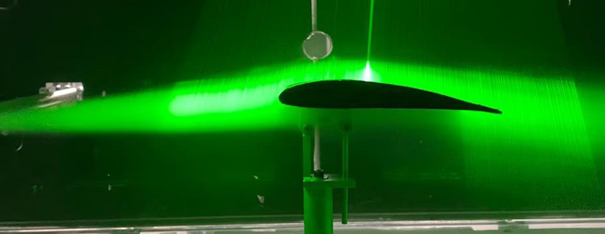
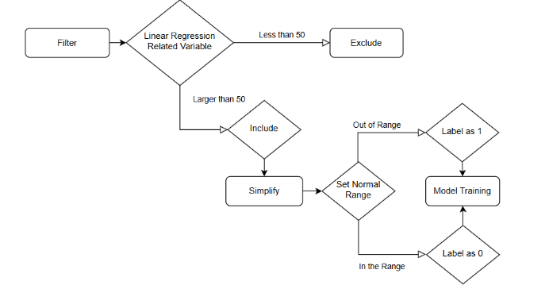
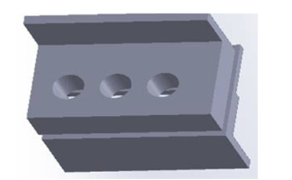

Developed a fixed-wing camera drone from concept to prototype, incorporating fluid analysis for aerodynamics, rib modeling, and final assembly. Ensured optimized camera stability while meeting strict 10kg weight constraints. Delivered a fully functional prototype through a rigorous and comprehensive design process..


A project focused on predicting postoperative hypoxemia using machine learning algorithms and patient background data. The goal is to enhance risk assessment and improve patient outcomes by leveraging advanced predictive modeling techniques.

Designed and built a custom integration connector for optical particle counter (OPC) and quartz crystal microbalance (QCM)
sensors, enabling synchronized data collection in an automated air quality monitoring system.